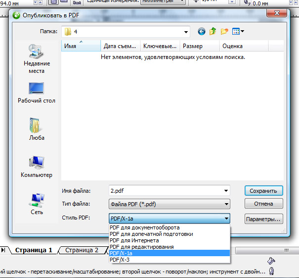

Из Корела в PDF 1.3. Как?
Karamellova / 07.12.2010, 13:01/00:41
Форум:
Здравствуйте!
Стоит задача подготовить файл для типографии, печать офсет. Требуют PDF версии 1.3. еще и композитный. Понятия не имею как конвертировать файл :(
Нашла на одном форуме, что PDF/X-1a:2001 соответствует как раз нужному формату 1.3.
Так ли это? Нужен совет профессионала!
Да это так.
Для того что бы корректно экспортировать в PDF версии 1.3, необходимо перед этим избавиться от всех прозрачностей, включая маски, интерактивную прозрачность и растровые изображения с прозрачными краями. "Избавиться" — перевести в (желательно) один растровый объект без прозрачности, оставив чистый вектор и шрифты без эффектов поверх этого растра.
Более быстрый способ — экспортировать в PDF версии 1.6, который сохраняет прозрачности, режимы наложения и т.д. А потом этот PDF конвертнуть в версию 1.3 с помощью InDesign или Acrobat Pro.
Des425, спасибо!
Sancho, благодорю, за исчерпывающую информацию! Меня смутило то, что Корел впринципе при конвертации не предлагает выбор версий PDF, а только предлагает описание (см. вложение).

Karamellova, рядом кнопка "Параметры", откроет вам таинства магии :)
Sancho, на самом деле эта кнопка утром мне мозг уже вынесла ))))) вот и залезла к вам на форум
А мне товарищи из типографии (со стажем большим) показали какие параметры надо ставить. Только на них и сижу.
Правда сам файл элементарный: растры без альфа-канала, кривые, без эффектов, CMYK.
Эти же параметры, (но без реза) использую, когда надо отдать файлы в пдф неизвестным лицам в неизвестные типографии.
П. С. Закладка препресс - галочка и цифра 3 мм. Это значит что у меня поля 3 мм (фон с поляим реза, а сама страница БЕЗ полей реза)